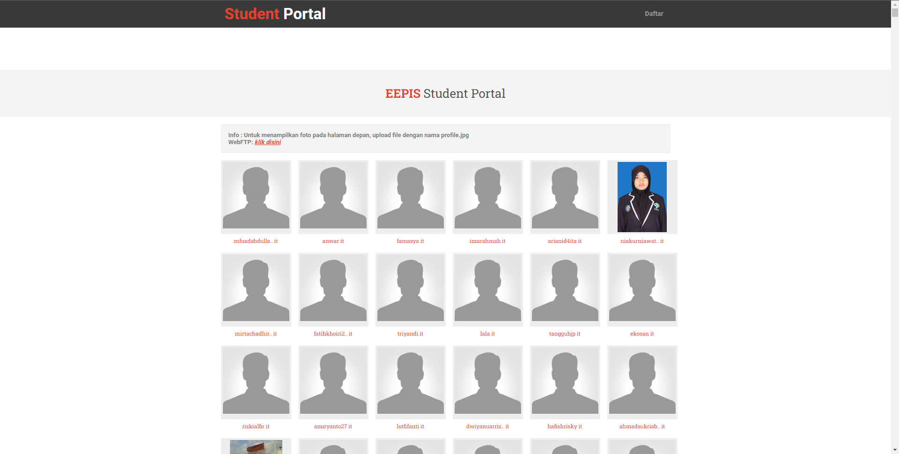
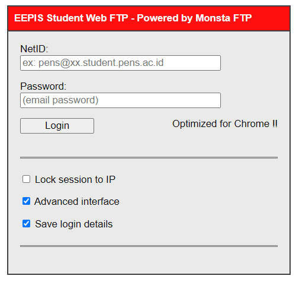
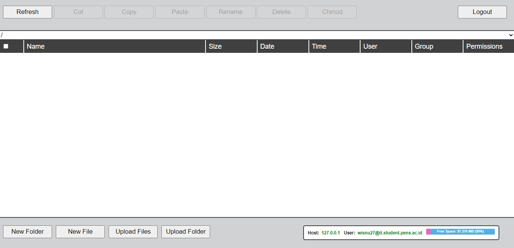

Bersumber dari laman Website Hub , blog adalah buku harian atau jurnal online yang terletak di situs web. Konten blog biasanya mencakup teks, gambar, video, GIF animasi, dan bahkan pindaian dari buku harian atau jurnal offline fisik lama dan dokumen hardcopy lainnya.
Sedangkan dari laman First Site Guide , blog adalah jurnal online atau situs web informasi yang menampilkan informasi dalam urutan kronologis terbalik, dengan posting terbaru muncul pertama, di bagian atas. Ini adalah platform di mana seorang penulis atau sekelompok penulis berbagi pandangan mereka tentang subjek individu.
Dari kedua pengertian di atas, maka dapat disimpulkan bahwa blog adalah jurnal online berbentuk situs web yang menampilkan informasi yang berisi kronologi dan posting-an terbaru yang muncul pertama di bagian atas. Isi dari konten blog adalah berupa teks, gambar, video, GIF animasi, dan beberapa juga ada berupa hasil scan buku harian atau jurnal offline fisik lama.
Maka dari itu di blog ini, saya akan memberikan sebuah tutorial untuk meng-upload web kita yang sudah jadi ke dalam layanan Web Student PENS.
Buka http://web.student.pens.ac.id/ lalu klik Daftar
Setelah mengklik daftar, maka akan muncul tampilan seperti ini
Kemudian login menggunakan NetID dan password Anda.
Setelah login, dashboard akan muncul seperti di bawah ini.
Unggah file dan folder ke dalam web dengan mengklik tombol Upload Files atau Upload Folder di dashboard tersebut.
Langkah selesai, website Anda sekarang sudah bisa diakses dari domain yang telah di sediakan.